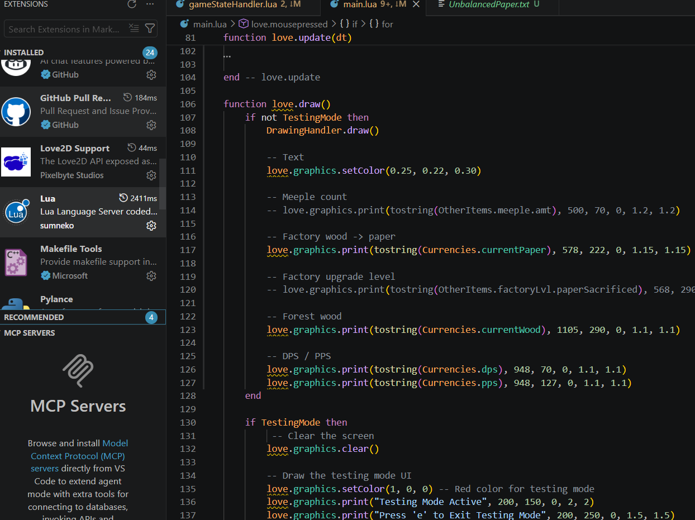
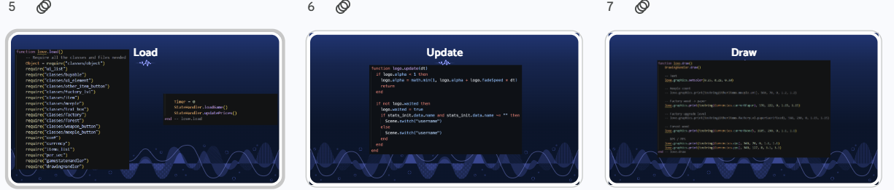
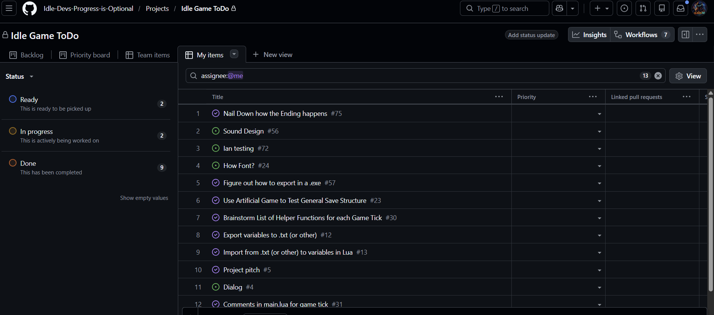
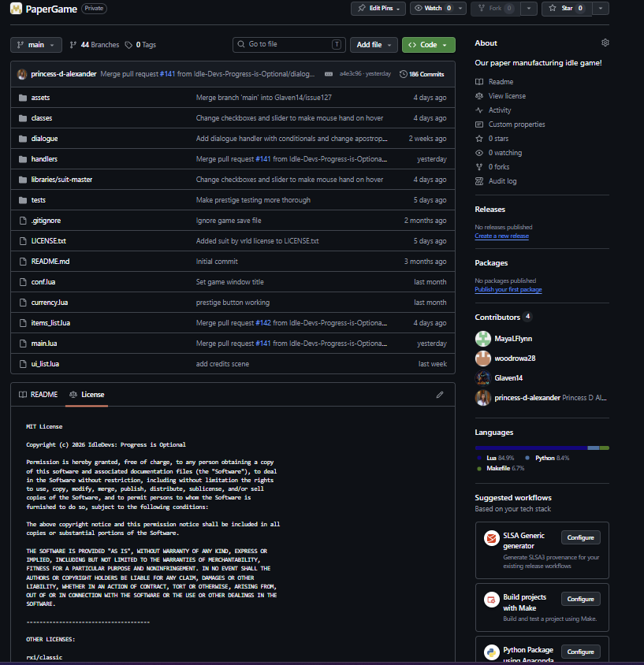

Engineering
Infrastructure
We took advantage of VSCode's extensions library to download the LuaLS extension which allowed us to have static type checking within our dynamically typed language. This has helped us work across our many different class files seamlessly and get syntax prompts for things like capitolising global variables which was extremely helpful when refractoring the textbox class. It was annoying at the beginning though because LuaLS doesn't recognize love and calls it an undefined global variable.

Self-learning
I created the big three portion of our tech tutorial. These three callback functions are the basis of our project in that they encompas the game cycle. One weakness was other than love.load, update, and draw appearing in all of the other games made using love, there wasn't any explicit mention as to how we should use them. And while their strength is that they are relatively intuitive, load, is called once at the beginning of the game to load the initial state of things and their dependencies, update runs on delta time and allows your game to be dynamic, and draw is run frame by frame and draws everything to the screen, I would caution people to plan out their game cycle before they start coding so that they can make their architecture conducive to the loop. For example, while you may want the game state to visually update when something happens in the update function, you have to find a way to translate that into a call in the draw function, because that's the only place you can call any love.graphics functions.

Process
My group employed a SCRUM agile development method. We created a backlog using GitHub issues and a project page, sprinted once a week to accomplish our goals, and met at least once a week to reflect on our progress. We have spent a lot of time revisiting our backlog, especially as deadlines draw closer, to see what we will keep/cut from our goals for our game. The only roadblock to our workflow was a teammate that struggled to participate in the same workflow.

Collaboration
I worked with Aubrey on issue #31 were we collaborated filling out comments for the code base. Our main back and forth was on trying to keep the form of each comment consistent, but we also discussed how much commenting was too much. I collaborated with everyone on issue #4, writing the script for our game. I had difficulties trying to balance the emotional connection we wanted for the game to drive player choices, while also accounting for the many different endings we had planned and not suffocating a relatively fast paced game with cutscenes. I also collaborated with Maya on pull request #38 which added functionality to buying items with buttons. I identified one bug in which width and height were seemingly reversed which was a remnant of another issue, so after Maya and I talked about it, I ended up making the change and then submitting the next pull request. I worked with Princess in issue #102 and reviewed her pull request from issue #120 into #102. I gave her and Aubrey an outline of how the abstraction for creating the text box system should go, Aubrey created the relevant function stubs and Princess filled them in. I communicated two changes to make with Princess's implementation, just about indentation and a check that didn't have a purpose, then had Maya review all of the changes to be merged into the main branch.
Issue #31 with AubreyIssue #4 with Everyone
Issue #38 with Maya
Issue #102 with Princess and Maya
Quality
Our codebase is engineering excellence because we kept our indentations and naming conventions standard, put all of our planning in GitHub, had as much abstraction as possible, kept our main as clean as possible, only variables that had to be were global, and the functions that had to be too, exist in main (for the most part), we created folders for things that belonged together (our class hierarchy, assets, tests, handlers, and dialogue), we didn't just leave old code in and comment it out, but we did include a reasonable amount of comments to describe how non-intuitive things work and summarize classes. We also tried to keep naming conventions for files and variables similar. Finally, we included all of the liscences in an easy to access place that includes our own liscence, and the ones from the resources we used. We came up short in optimizing and refactoring once we got past our mvp. We kept adding to our class hierarchy but since the skeleton of the game was complete, we didn't feel the need to redo everything. Towards the last few weeks we also got lazy with keeping our history clean by fixing bugs we'd find in a branch in the same PR without creating an issue for it. I especially started to forget to commit for each component I added to bigger issues - especially when working on my own branch that no one else had to contribute to. The last month or so, I lost track of my journal, struggling to document all of the daily changes made, especially when we were on the road for baseball. Finally, there were a handful of times when a PR review did not catch a bug that arose when merged with main, as a result, there were a couple of times when our main was broken - but everytime was promptly fixed.
